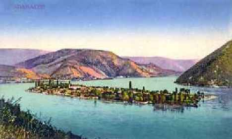

¿Qué sabemos los peruanos del Danubio?. Varias cosas, de pronto las necesarias:
Que es un río, que es “azul”, que en algún momento pasa por Viena, capital de Austria, que inspiró en el austriaco Johann Strauss un hermoso Vals llamado “El Danubio Azul” cuyo
baile y entonación está asociado a uno de los momentos mas importantes de la vida: el Matrimonio. Es suficiente ¿No?.
El río Danubio no será el “Monarca de los ríos” como el Amazonas. Sus 2860 Km de longitud no alcanzarían a recorrer la costa peruana. Tampoco presenta fama de “Río malvado y traicionero” como nuestro costeñísimo río Rímac. Menos se sabe si en sus orillas tenga “puquiales cristalinos donde se laven las yanañahuis sus cabellos de oro fino” como afirman los
huancas respecto a nuestro serranísimo río Mantaro.
Pero todo río no sólo es un acontecimiento geográfico. También tiene participación en la vida misma de los pueblos que lo circundan, merced a la interacción hombre – naturaleza.
La que sigue es una historia verdadera. Antes un breve diccionario peruano:
Puquial: afloramiento por gravedad, de agua cristalina subterránea.
Yanañahuis con cabellos de oro fino: Chicas de ojos negros y cabellera rubia. Un Patrimonio nacional exclusivo de Perú.
REQUIEM POR ADA KALEH
Ada Kaleh era una bella isla en forma de media luna situada en una inflexión del Danubio, el 2º río mas largo y caudaloso de Europa. En su camino hacia el mar Negro, el río
atraviesa los Cárpatos Rumanos – esas montañas que tanto se mencionan en las historias de Vlad Tepes – el famoso Drácula.
Su paso por el desfiladero entre los Balcanes y los Cárpatos, a diferencia de la tranquilidad del recorrido por la meseta balcánica, es moderadamente accidentado por
el estrechamiento del cauce y presencia de fiordos, pero esta circunstancia, como se verá ha posibilitado aprovechamientos para la energía.
Curiosa ubicación de la isla Ada Kaleh entre Rumanía y lo que vendría a ser la actual Serbia. Sin embargo su población era en mayoría formada por comerciantes turcos,
quienes desde tiempos muy remotos explotaban el comercio y luego el turismo.
Y es que esta isla de 1,7 x 0,5 Km aprox., era efectivamente un pequeño paraíso con aire casi tropical en un medio mas propiamente frígido de Europa del Este.
Por las noches el aroma de las flores llegaba hasta tierra firme, en especial de “la reina de la noche”, una extraña inflorescencia de color blanco, que sólo se abría
por las noches.
Las excursiones hacia Ada Kaleh eran todo un acontecimiento para la pequeña familia rumana de Laurita. Para su padre Denu, era un lugar ideal para el relax,
absolutamente aislado, libre, sin leyes hogareñas restrictivas donde podía fumar a sus anchas en su extraña pipa turca, el famoso tabaco que se procesaba en
la isla a la vez de saborear el no menos famoso café que preparaba en la Taberna de Alí.
La madre Doina, tal vez no lo disfrutase tanto, o no quisiera manifestarlo. Pero también se le veía saborear los exóticos helados de frutas y hacer amistades con las señoras mayores.
O tal vez le era suficiente con ver el goce de los otros. Era maestra.
Para la niña en cambio, éste era un paraíso, donde disfrutaba de los dulces de lejana procedencia, e higos de la isla aplastaditos y procesados a la manera turca,
en formas de cuentas ó collares de cuentas. Regalos de Alí, quien también le prodigaba de recuerdos para su amiguito Zenu ( srenu se pronuncia “en peruano”).
Era, dijimos al inicio por que actualmente la isla ya no existe.
Veamos algo de historia
Los turcos ocuparon la isla desde el siglo XV.
Un lugar estratégico para efectuar y controlar el comercio fluvial. En 1718 pasó al poder del Imperio Austriaco. A ellos pertenecen las fortificaciones que recordaban un pasado militar.
En 1739 Austria devolvió Serbia y Oltenia a Turkía. Y con ello la isla.
En 1829 pasó a la administración rumana, pero en 1885 tomó un carácter libre al darse por finalizadas sus funciones militares.
En 1919 retornó al dominio de Rumania por determinación de sus habitantes. Ello fue reconocido por Turkía en 1923.

ada kaleh
Sin embargo el destino le tenía reservada otra sorpresa:
En la década del 60 al 70 los gobiernos de Rumania y Yugoslavia, viendo la fortaleza rocosa de los estribos laterales (Cárpatos vs. Balcanes), decidieron construir una
gigantesca
represa de 2200 millones de metros cúbicos de capacidad para abastecer a una gran planta Hidroeléctrica.
Represa Portile de Fier I- rio Danubio
El padre lo anunció un día:
Disfruten de Ada Kaleh, por que esta es la ultima vez que la visitamos. La isla será devorada por el agua al entrar en funcionamiento la represa que están construyendo
los hombres de Orsova.
¿Y para qué han construido una represa? – Inquirió la niña.
La represa almacenará agua para obtener la energía eléctrica que necesita el país.
¡Yo no quiero electricidad! ¡Yo quiero seguir viniendo aquí, a montar los caballitos y comer mis higos, y preparar el café con Alí, y .. y todo eso!
Disfrutad, que nada podemos hacer contra el avance de lo que se llama progreso.
En 1971 la isla fue inundada y cubierta totalmente por el Danubio. Parte de sus monumentos fueron previamente trasladados a otra isla: Ostrobul – Simian.
El 18 de mayo 1972 se inauguró la gran hidroeléctrica Portile de Fier I ( Puerta de Hierro I ), una de las mayores de Europa con 1080 Megavatios de Potencia en su
primera etapa.
La planta eléctrica se construyó cerca a Drobeta – Turnu Savarín. Aunque la altura de agua sea baja, el caudal a turbinar es descomunal: 8700 metros cúbicos por segundo.
Casi un río amazónico. Una posterior segunda etapa incrementó la potencia en 250 Megavatios.
La navegación no se vio afectada puesto que se construyó un sistema de esclusas para el tránsito de los barcos. Se indica que su capacidad de paso es para 52,4 millones
de Toneladas por año.Atrás quedaron los traviesos sueños de niña, de convertirse en musulmana. Adiós a la pequeña alfombra de juncos con que imitaba la oración ante el llamado del Imán de la gran Mezquita, que de seguro también se llamaba Alí.
Era un lugar ideal para ser incluso un paraíso fiscal esta Isla. Aunque esto no lo creemos, porque... ¿Conocéis algún paraíso fiscal musulmán en la actualidad? Decídmelo para denunciarlos.
Al desaparecer Ada Kaleh al influjo del interés por la necesidad de energía, una constante en la actualidad, quedaron también sepultados no sólo la infraestructura, sino la historia impregnada en sus murallas de antigua fortaleza, sus malecones y templos.
También sus muros habían servido para resguardar el destierro de un ilustre español, el poeta Garcilazo de la Vega ( Homólogo del cronista peruano Inca Garcilazo de la Vega),
recordado en los versos de José caballero Bonald, (“Meditación en Ada Kaleh”) y que viene a ser un epitafio para lo que fue este lugar:
"Más, la isla no es ya
sino un rastro ilusorio en medio
del furtivo Danubio
Cómplice de sí misma
y antes de tiempo dada
a los agudos filos de la muerte
Sólo el agua discurre
diversa entre contrarios y atestigua
que otro nuevo destierro reservó
la erosión de la historia
al refugio infeliz del desterrado"
A veces cuando baja el nivel del agua, se observa la cúpula de la mezquita. Algunos creen escuchar el llamado del Imán.
El padre y la madre ya no están. De Zenu nada sabemos. Alí, creo que se reencarnó en un sobrino mío que vive en UTAH – USA.
Un día Laurita ya no apareció por Deva y parece que se fue a España. Pero sabemos algo: Ya no se hizo musulmana. Sus deseos quedaron sepultados con la isla.
Es decir, una vida tranquila,.... hasta que un peruano se cruzó en su camino.
Pero sólo fue una fugaz aparición, como cuando dos rectas que han coincidido en un punto luego se alejan para proseguir su trayectoria al infinito.
Me dejas sólo el recuerdo sabroso de tus ideas, tus reproches, tus ánimos.
Y el deseo de encontrarnos algún día en el rincón donde habita el olvido.
Eloy Lima Olivera nació en 1953 en Arequipa (Perú) y reside actualmente en Madrid (España). Egresó con el título de Ingeniero Electricista en la Universidad de Lima (Perú) y es Master en Gestión Integrada – Calidad, Medio ambiente y Prevención de Riesgos laborales (Madrid- España). Se desempeña en trabajos acorde a su preparación.